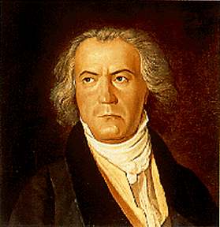

|  |
…Beethoven mikor eldöntötte, hogy a IX. szimfónia fináléját Schiller szavaira írt kórussal szólaltatja meg, még mindig számos problémával kellett megküzdenie a megfelelő részletek kiválasztását, illetve az emberi hangnak a szimfonikus szerkezetbe való beillesztését illetően. Előbbi azt jelentette, hogy a – mai ízlésünk számára túlságosan „szárnyaló” – költeményből azokat a strófákat emelje ki, amelyek valóban az öröm csodálatos ajándékát ünneplik; utóbbi azt, hogy a zeneköltőnek gondoskodnia kellett olyan meggyőző formai megoldásról, amely elhiteti a hallgatóval az ének felhangzásának dramaturgiai szükségességét. …
Hangversenykalauz |